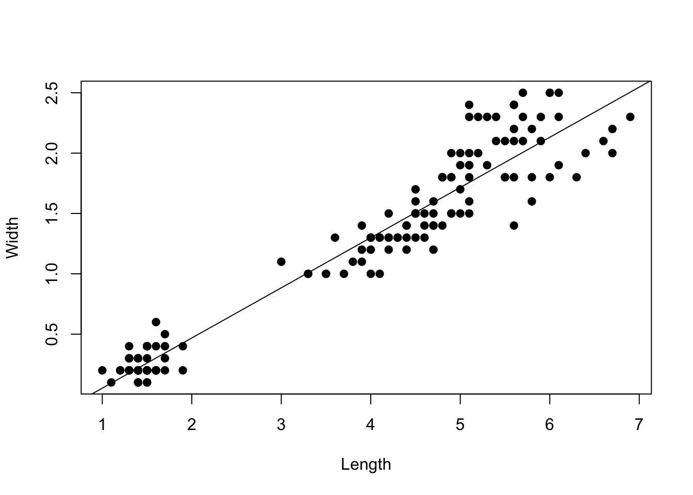
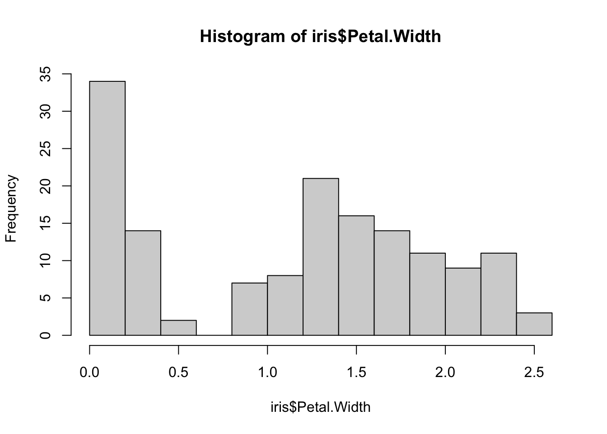

# The library() function loads R packages that are not supplied in the "base" software
# You need to install a package once before loading
# install.packages('dplyr')
# Load the 'dplyr' package which has many convenient data manipulation functions
library(dplyr) 2 Introduction to R
This Appendix serves two purposes. First, it introduces you to R. Second, it introduces functions for conducting an ordinary least squares (OLS) regression on a data set supplied within R.
The nice thing about Quarto (similar to .RMD) files, is that you can integrate code within text files. The text files can be rendered into HTML, PDF, or Word documents (among others). These documents are therefore like a ‘laboratory’ notebook that allow you to show your coding work, visual outputs, and contextualizing your work with text using a visually aesthetic framework.
R is a free and open-source programming language, with many functions supplied by the “base” code. However, many other functions require loading 3rd party packages. Be aware that none of the functions in these other packages are guaranteed to work in a certain way (although many are very well maintained and validated by large user bases). You’ll need to do your own research to make sure which functions can be trusted, and sometimes you’ll need to devise your own strategies to test the functions to make sure they work as they claim to.
2.1 Load a package
2.2 Load a data set
# R has many built-in data sets for educational purposes.
# The data() function will show all of these, with descriptions
data() # Do this on your own.2.3 Manipulate and visualize the data
# Load the 'iris' data set, which contains lengths and widths of flower petals
# We choose this, because these lengths and widths are often linearly associated
data(iris)
is.data.frame(iris) # Validate as data frame object[1] TRUEis.vector(iris) # Not a vector object[1] FALSEstr(iris) # Show general object characteristics'data.frame': 150 obs. of 5 variables:
$ Sepal.Length: num 5.1 4.9 4.7 4.6 5 5.4 4.6 5 4.4 4.9 ...
$ Sepal.Width : num 3.5 3 3.2 3.1 3.6 3.9 3.4 3.4 2.9 3.1 ...
$ Petal.Length: num 1.4 1.4 1.3 1.5 1.4 1.7 1.4 1.5 1.4 1.5 ...
$ Petal.Width : num 0.2 0.2 0.2 0.2 0.2 0.4 0.3 0.2 0.2 0.1 ...
$ Species : Factor w/ 3 levels "setosa","versicolor",..: 1 1 1 1 1 1 1 1 1 1 ...glimpse(iris) # Similar to str() but more detailed/relevantRows: 150
Columns: 5
$ Sepal.Length <dbl> 5.1, 4.9, 4.7, 4.6, 5.0, 5.4, 4.6, 5.0, 4.4, 4.9, 5.4, 4.…
$ Sepal.Width <dbl> 3.5, 3.0, 3.2, 3.1, 3.6, 3.9, 3.4, 3.4, 2.9, 3.1, 3.7, 3.…
$ Petal.Length <dbl> 1.4, 1.4, 1.3, 1.5, 1.4, 1.7, 1.4, 1.5, 1.4, 1.5, 1.5, 1.…
$ Petal.Width <dbl> 0.2, 0.2, 0.2, 0.2, 0.2, 0.4, 0.3, 0.2, 0.2, 0.1, 0.2, 0.…
$ Species <fct> setosa, setosa, setosa, setosa, setosa, setosa, setosa, s…# glimpse() is a function within the dplyr package.
# We can call the function like this, because dplyr was loaded already
# Alternatively we can use the following syntax to call non-base functions
dplyr::glimpse(iris)Rows: 150
Columns: 5
$ Sepal.Length <dbl> 5.1, 4.9, 4.7, 4.6, 5.0, 5.4, 4.6, 5.0, 4.4, 4.9, 5.4, 4.…
$ Sepal.Width <dbl> 3.5, 3.0, 3.2, 3.1, 3.6, 3.9, 3.4, 3.4, 2.9, 3.1, 3.7, 3.…
$ Petal.Length <dbl> 1.4, 1.4, 1.3, 1.5, 1.4, 1.7, 1.4, 1.5, 1.4, 1.5, 1.5, 1.…
$ Petal.Width <dbl> 0.2, 0.2, 0.2, 0.2, 0.2, 0.4, 0.3, 0.2, 0.2, 0.1, 0.2, 0.…
$ Species <fct> setosa, setosa, setosa, setosa, setosa, setosa, setosa, s…# This way, you are less prone to errors, especially if
# functions in different packages are named the same or similarly (masking)From the glimpse() function we see that there are five columns within the iris data frame, and there are 150 total data points (rows). We also see that four columns are numeric doubles, while one (Species) is a factor.
# Subset column vectors from the data frame using the '$' symbol
mean(iris$Petal.Length)[1] 3.758# R can do 'vectorized' functions
iris$Petal.Width * 2 [1] 0.4 0.4 0.4 0.4 0.4 0.8 0.6 0.4 0.4 0.2 0.4 0.4 0.2 0.2 0.4 0.8 0.8 0.6
[19] 0.6 0.6 0.4 0.8 0.4 1.0 0.4 0.4 0.8 0.4 0.4 0.4 0.4 0.8 0.2 0.4 0.4 0.4
[37] 0.4 0.2 0.4 0.4 0.6 0.6 0.4 1.2 0.8 0.6 0.4 0.4 0.4 0.4 2.8 3.0 3.0 2.6
[55] 3.0 2.6 3.2 2.0 2.6 2.8 2.0 3.0 2.0 2.8 2.6 2.8 3.0 2.0 3.0 2.2 3.6 2.6
[73] 3.0 2.4 2.6 2.8 2.8 3.4 3.0 2.0 2.2 2.0 2.4 3.2 3.0 3.2 3.0 2.6 2.6 2.6
[91] 2.4 2.8 2.4 2.0 2.6 2.4 2.6 2.6 2.2 2.6 5.0 3.8 4.2 3.6 4.4 4.2 3.4 3.6
[109] 3.6 5.0 4.0 3.8 4.2 4.0 4.8 4.6 3.6 4.4 4.6 3.0 4.6 4.0 4.0 3.6 4.2 3.6
[127] 3.6 3.6 4.2 3.2 3.8 4.0 4.4 3.0 2.8 4.6 4.8 3.6 3.6 4.2 4.8 4.6 3.8 4.6
[145] 5.0 4.6 3.8 4.0 4.6 3.6# Check if factor
is.factor(iris$Species)[1] TRUEis.character(iris$Species)[1] FALSELet’s make some exploratory visualizations.
# Histogram
hist(iris$Petal.Length)
hist(iris$Petal.Width)

# Explore association between random variables
# formula method: y ~ x
# Read the above like:
# y-variable 'modeled by' x-variable, or
# y-variable 'as a function of' x-variable
plot(iris$Petal.Width ~ iris$Petal.Length,
xlab = "Length",
ylab = "Width",
pch = 19) #pch = plot character2.4 Is there a linear association?
The goal of regression is to determine the functional association between random variables. With linear regression the specific goal is to test whether there is a linear relationship between a response variable (y) and one or more covariates (x). The form of the functional relationship is: \[y_i = \beta_0 + \beta_1 x_i + \epsilon_i ,\] where \(y_i\) is the \(i\)-th data point, \(\beta_0\) is the intercept, \(\beta_1\) is the slope, and \(x\) is the single covariate in the model. In matrix form we have: \[\bf{y} = \bf{X} \bf{B} + \boldsymbol\epsilon\] For hypothesis testing, we are testing the null hypothesis that the slope of the relationship between \(x\) and \(y\) is zero (i.e., no detectable linear relationship, \(\beta_1 = 0\)).
We can conduct linear regression in R using the lm() function, where ‘lm’ stands for ‘linear model’. This function specifically estimates the model parameter (slope, intercept, and residual variance), using the ordinary least squares approach, which we will soon learn in lecture.
my_model = lm(formula = Petal.Width ~ Petal.Length,
data = iris)The line above stores the output of the linear model in the my_model object. We can then manipulate the my_model object and apply various functions to help us understand the outcome of the linear regression analysis.
str(my_model)List of 12
$ coefficients : Named num [1:2] -0.363 0.416
..- attr(*, "names")= chr [1:2] "(Intercept)" "Petal.Length"
$ residuals : Named num [1:150] -0.019 -0.019 0.0226 -0.0606 -0.019 ...
..- attr(*, "names")= chr [1:150] "1" "2" "3" "4" ...
$ effects : Named num [1:150] -14.6888 8.9588 0.0257 -0.0576 -0.0159 ...
..- attr(*, "names")= chr [1:150] "(Intercept)" "Petal.Length" "" "" ...
$ rank : int 2
$ fitted.values: Named num [1:150] 0.219 0.219 0.177 0.261 0.219 ...
..- attr(*, "names")= chr [1:150] "1" "2" "3" "4" ...
$ assign : int [1:2] 0 1
$ qr :List of 5
..$ qr : num [1:150, 1:2] -12.2474 0.0816 0.0816 0.0816 0.0816 ...
.. ..- attr(*, "dimnames")=List of 2
.. .. ..$ : chr [1:150] "1" "2" "3" "4" ...
.. .. ..$ : chr [1:2] "(Intercept)" "Petal.Length"
.. ..- attr(*, "assign")= int [1:2] 0 1
..$ qraux: num [1:2] 1.08 1.1
..$ pivot: int [1:2] 1 2
..$ tol : num 1e-07
..$ rank : int 2
..- attr(*, "class")= chr "qr"
$ df.residual : int 148
$ xlevels : Named list()
$ call : language lm(formula = Petal.Width ~ Petal.Length, data = iris)
$ terms :Classes 'terms', 'formula' language Petal.Width ~ Petal.Length
.. ..- attr(*, "variables")= language list(Petal.Width, Petal.Length)
.. ..- attr(*, "factors")= int [1:2, 1] 0 1
.. .. ..- attr(*, "dimnames")=List of 2
.. .. .. ..$ : chr [1:2] "Petal.Width" "Petal.Length"
.. .. .. ..$ : chr "Petal.Length"
.. ..- attr(*, "term.labels")= chr "Petal.Length"
.. ..- attr(*, "order")= int 1
.. ..- attr(*, "intercept")= int 1
.. ..- attr(*, "response")= int 1
.. ..- attr(*, ".Environment")=<environment: R_GlobalEnv>
.. ..- attr(*, "predvars")= language list(Petal.Width, Petal.Length)
.. ..- attr(*, "dataClasses")= Named chr [1:2] "numeric" "numeric"
.. .. ..- attr(*, "names")= chr [1:2] "Petal.Width" "Petal.Length"
$ model :'data.frame': 150 obs. of 2 variables:
..$ Petal.Width : num [1:150] 0.2 0.2 0.2 0.2 0.2 0.4 0.3 0.2 0.2 0.1 ...
..$ Petal.Length: num [1:150] 1.4 1.4 1.3 1.5 1.4 1.7 1.4 1.5 1.4 1.5 ...
..- attr(*, "terms")=Classes 'terms', 'formula' language Petal.Width ~ Petal.Length
.. .. ..- attr(*, "variables")= language list(Petal.Width, Petal.Length)
.. .. ..- attr(*, "factors")= int [1:2, 1] 0 1
.. .. .. ..- attr(*, "dimnames")=List of 2
.. .. .. .. ..$ : chr [1:2] "Petal.Width" "Petal.Length"
.. .. .. .. ..$ : chr "Petal.Length"
.. .. ..- attr(*, "term.labels")= chr "Petal.Length"
.. .. ..- attr(*, "order")= int 1
.. .. ..- attr(*, "intercept")= int 1
.. .. ..- attr(*, "response")= int 1
.. .. ..- attr(*, ".Environment")=<environment: R_GlobalEnv>
.. .. ..- attr(*, "predvars")= language list(Petal.Width, Petal.Length)
.. .. ..- attr(*, "dataClasses")= Named chr [1:2] "numeric" "numeric"
.. .. .. ..- attr(*, "names")= chr [1:2] "Petal.Width" "Petal.Length"
- attr(*, "class")= chr "lm"Obviously, the output of the analysis is a complicated data structure with many elements. There are, however, some convenient functions to summarize these outputs for us.
summary(my_model)
Call:
lm(formula = Petal.Width ~ Petal.Length, data = iris)
Residuals:
Min 1Q Median 3Q Max
-0.56515 -0.12358 -0.01898 0.13288 0.64272
Coefficients:
Estimate Std. Error t value Pr(>|t|)
(Intercept) -0.363076 0.039762 -9.131 4.7e-16 ***
Petal.Length 0.415755 0.009582 43.387 < 2e-16 ***
---
Signif. codes: 0 '***' 0.001 '**' 0.01 '*' 0.05 '.' 0.1 ' ' 1
Residual standard error: 0.2065 on 148 degrees of freedom
Multiple R-squared: 0.9271, Adjusted R-squared: 0.9266
F-statistic: 1882 on 1 and 148 DF, p-value: < 2.2e-16Above is the main outcome that we care about. The summary() function tells us the parameter estimates (with estimates of parameter uncertainty). It also conducts null-hypothesis testing, providing p-values, and shows the goodness of model fit, using R-squared.
Tip
The goal of the first part of this course is to understand in sufficient detail how this analysis is conducted, so that we can interpret the results from a well-informed standpoint.
plot(iris$Petal.Width ~ iris$Petal.Length,
xlab = "Length",
ylab = "Width",
pch = 19)
# Add the estimated linear relationship
abline(reg = my_model)